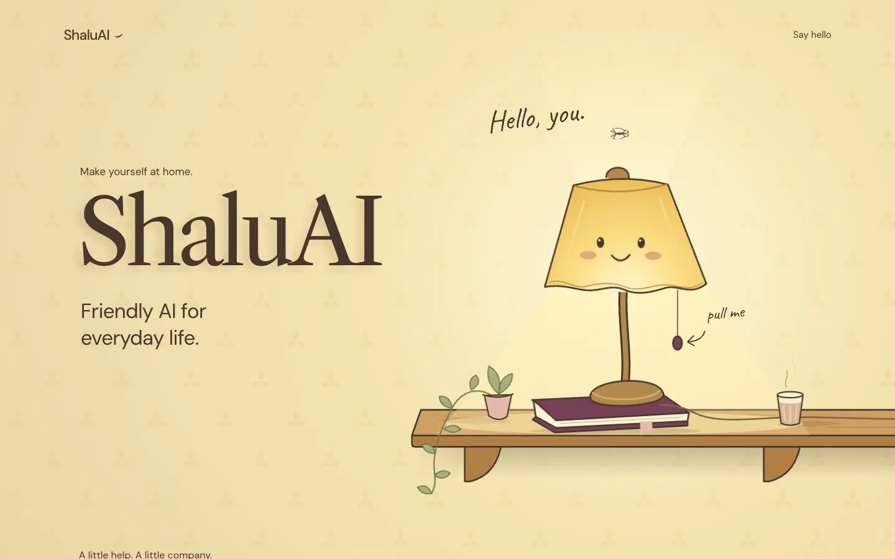
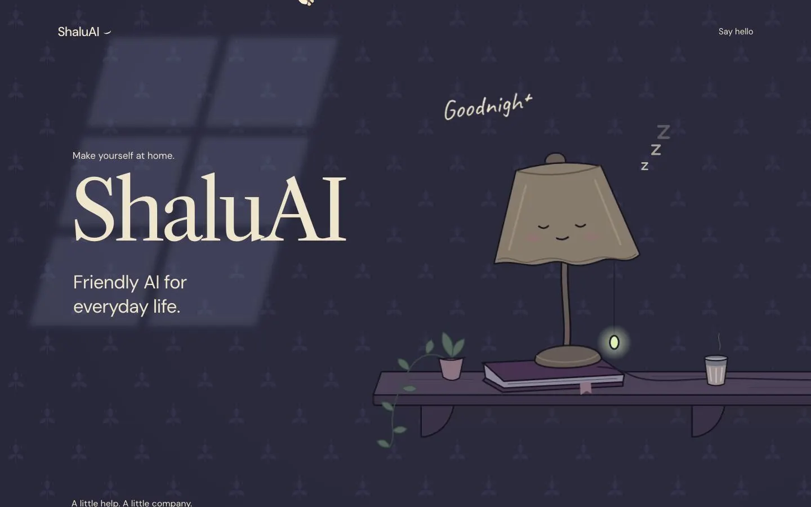
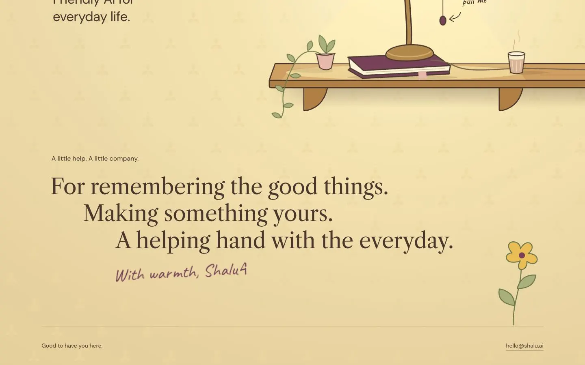

ShaluAI
A lamp with a pull cord that switches the page from day to night.
A landing page for a friendly everyday AI, told through a lamp on a shelf instead of a product screenshot.
Visit shalu.ai
Design decisions
- Type: a large high-contrast serif wordmark in brown (#49372E) with DM Sans for the tagline, on a warm yellow wall with a faint repeating wallpaper motif.
- Illustration: the mascot is a smiling lamp standing on a book, with a trailing plant, a glass of chai and a moth, all drawn with a soft inked outline on a wooden shelf that runs off the right edge.
- Handwriting is the lamp's voice: 'Hello, you.' writes itself above the shade, and a 'pull me' note with an arrow points at the cord. The rest of the page stays in serif and sans.
- Interaction: dragging the cord down switches the whole page to night. The wall turns deep purple, a window of moonlight falls across the headline, the lamp closes its eyes with drifting Zs, and the cord's bead glows so it can still be found in the dark.
- A second reward: tapping the sleeping lamp makes it wink and write 'Just resting my...', so the toggle is not the end of the interaction.
- Further down, three serif lines step in from the left one indent at a time, signed off in the same handwriting ('With warmth, ShaluAI') next to a small drawn flower.
- Mobile: the wordmark and tagline come first, and the lamp scene sits below at full width with the greeting, the moth and the 'pull me' hint kept.
On a phone

ShaluAI has a single theme, so there is one set of captures.
The flow, step by step




Further down the page
